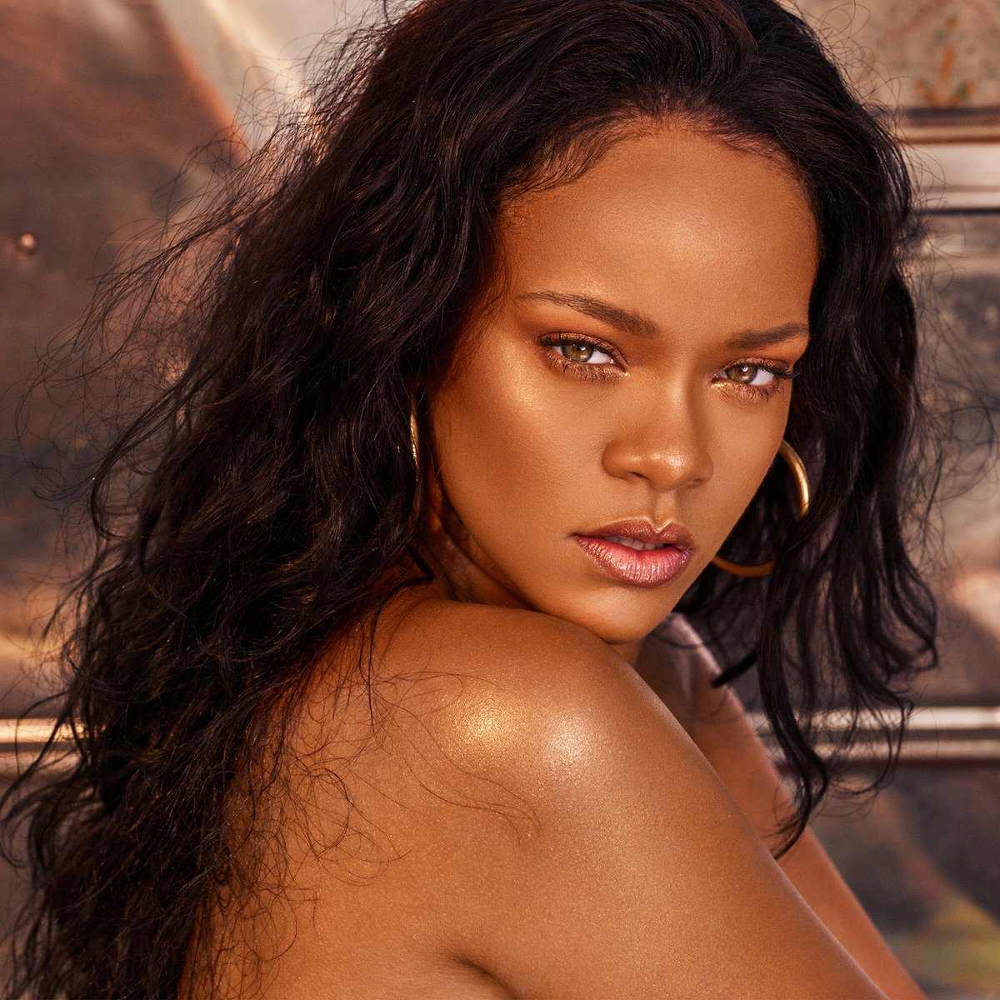

About Robyn
Robyn Rihanna Fenty is a business mogul and a hitmaker who was born in Barbados. She is mostly known for her versatile voice and for her fashionable appearance
Robyn in Paris during her Fenty beauty Fashion show launch
Robyn's characteristics
- She is a very powerful woman
- She is inspiring the world
- She is also respected by many in the industry
Robyn's friends and family
Robyn has an amazing group of people who has contributed to her major rise to success. They have helped keep her grounded and humble which are very important attributes to have in this cut throat industry. Click on the links below to read more about them: